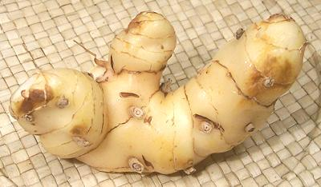

Galangal

[Greater Galangal, Galanga, Siamese Ginger; Kha (Thai); Laos, Lengkuas,
(Indonesia); Rieng (Viet); Alpinia galanga]
This is an essential ingredient for Southeast Asian cuisines,
particularly those of Thailand and Indonesia. While it looks rather
similar to ginger, the flavor is very different, the skin is lighter in
color, the inside is white rather than yellow, and it's practically wood
hard. Galangal is more earthy, with flavors of citrus, pine and camphor.
Fresh root is increasingly available in the US, with some now grown in
California, Florida, Central America and Pacific Islands. Dried powder is
also available, but fresh is highly preferred for most uses. It was a
widely used medicinal in Europe during the 11th and 12th centuries and
is still used medicinally in Asia, as well as having a place in African
American hoodoo magic.
More on Gingers.
Galangal is simply essential for many Thai and Indonesian recipes. It
is often used in fish and shellfish recipes because it removes "fishy"
tastes.which many find objectionable. Ginger can be used as a substitute
but it's a rather imperfect substitute due to being spicier and less
resinous. If you have to use ginger, use a little less.
Buying:
Fresh galangal can be found in
many specialty markets serving Southeast Asian communities, but just
about nowhere else. It's the same story for frozen (generally from
Thailand) and dried powder. Galangal can also be found packed in brine,
but jars of Krachi are sometimes
mislabeled Galangal (Krachi is long and narrow). Dried slices are also
available but are highly inferior to fresh or frozen, but superior to
powdered. Both fresh and dried can be purchased on-line.
Storing:
Fresh galangal does not keep long even
refrigerated and is subject to mold. I've had the best success, as with
ginger, refrigerated in a small plastic bag with the top left open. It
needs high humidity but no surface moisture. For longer keeping it
should be sliced and frozen.
Slicing:
Galangal is practically hard as a board, so
it's not easy to slice, especially to slice thin as needed to break up the
fibers for pounding in curry pastes. I set the root on the cutting
board so it is stable. I set a razor sharp Chinese cleaver knife where
I want the cut by slicing in just a litte. Then I drive it through with
a soft faced mallet (see Chinese
Cleaver Knife & Mallet).
Cooking:
Galangal is commonly used two ways, sliced and
included whole in soups and stews (removed before serving (or not), you don't
try to eat it), and sliced, chopped and pounded into a paste for
inclusion in curry pastes and the like.
gg_galangz 090206 - www.clovegarden.com
©Andrew Grygus - agryg@aaxnet.com - photos on
this page © cg1 - Linking to and
non-commercial use of this page permitted